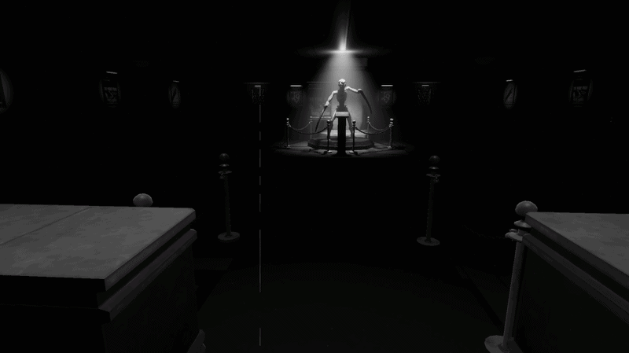
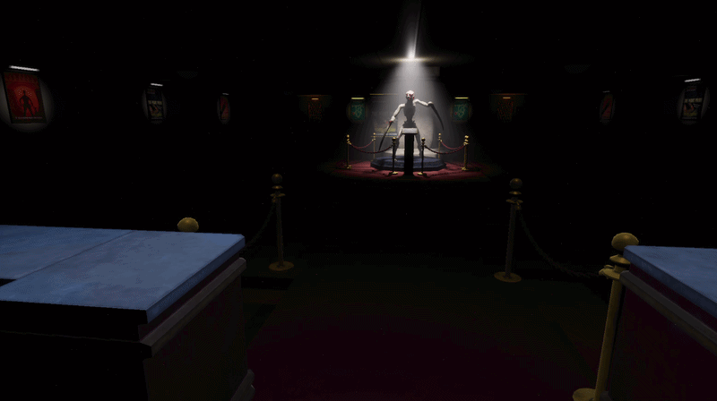
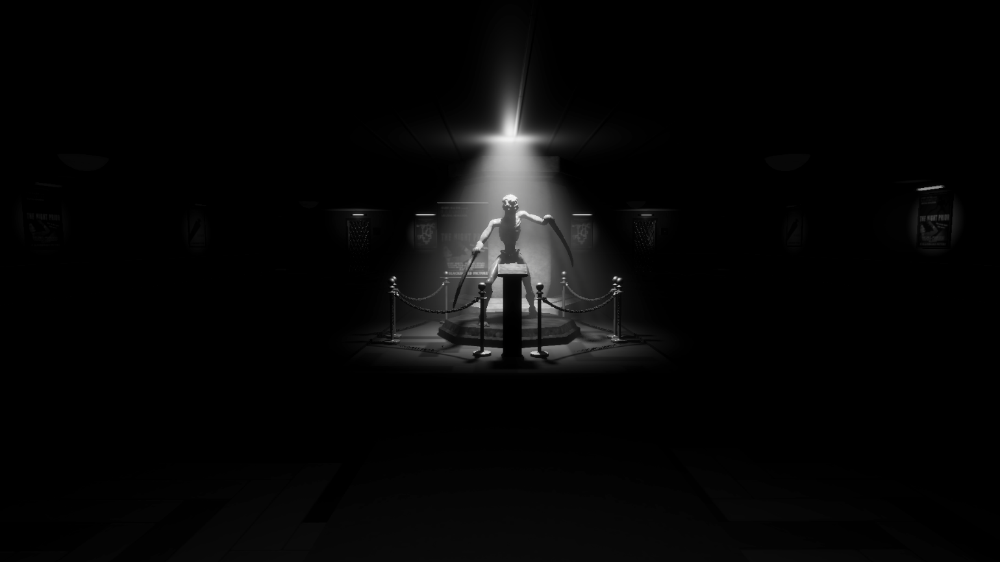
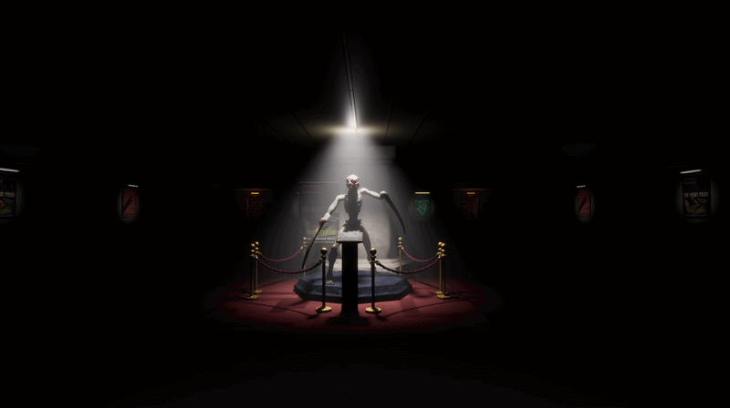
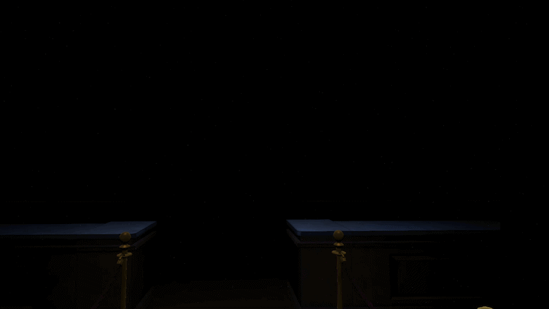

Here are my Shaders
Post-Process: Vintage Cinema Filter (HLSL / HDRP)
I developed a custom Post-Process shader in Unity HDRP to recreate the aesthetic of degraded vintage cinema film.


User interface and editable parameters of the effect in Unity:

1. Black & White Conversion
The shader first calculates the scene luminance using a dot product with standard visual perception coefficients (Rec. 601).
A simple condition based on a float variable "_IsBlackAndWhite" allows the mode to be dynamically toggled on or off.

float3 color = SAMPLE_TEXTURE2D_X(_InputTexture, sampler_InputTexture, uv).rgb;
if(_IsBlackAndWhite > 0.5) {
float lum = dot(color, float3(0.299, 0.587, 0.114));
color = float3(lum, lum, lum);
}2. Flicker Effect (Light Jumps)
To simulate the brightness variations of an old projector, I use a time-based hash function (`hash`).
The "floor()" function is used to lock the noise into distinct steps. The "pow()" function accentuates the rarity and suddenness of light drops according to the "_FlickerSharpness" variable chosen by the user.

float rawNoise = hash(float2(floor(time * _FlickerSpeed), 123.45));
float flickerNoise = pow(rawNoise, _FlickerSharpness);
float flicker = flickerNoise * _FlickerIntensity;
color *= (1.0 - flicker);3. Procedural Scratch Generation
The vertical film scratches are created by dividing the screen into columns using a one-dimensional UV grid "gridX".
If a column passes the random probability test, a line is drawn. Horizontal interruptions are then generated via a "breakModifier" to avoid having simple, continuous straight lines. Finally, the effect applies either a drop shadow (black scratch) or a burn (white scratch).
float scratchTime = floor(time * _ScratchSpeed);
float gridX = uv.x * (_ScratchResolution * 5.0);
float cellX = floor(gridX);
float randCol = hash(float2(cellX, scratchTime));
if (randCol > 0.997) {
float xSub = frac(gridX) - 0.5;
float lineProfile = pow(saturate(1.0 - abs(xSub) * 2.0), thicknessPower);
scratchLine = lineProfile * withinLine * _ScratchIntensity;
}4. Grain & Lens Dust
Instead of using a looping noise texture, the grain is entirely mathematical and procedural.
It runs on a cellular noise algorithm using a double "for" loop that checks neighboring cells. This generates unique micro-dots and dust aggregates on every frame, ensuring ultra-realistic dynamics.

for(int y=-1; y<=1; y++) {
for(int x=-1; x<=1; x++) {
float2 neighbor = float2(x, y);
float2 cell = i_uv + neighbor;
dots += pow(saturate(1.0 - dist * (1.0 / _GrainSize)), _GrainSharpness);
}
}Shader: Outline / Drawing (Cel-Shading)
Next project to be documented in the same manner...